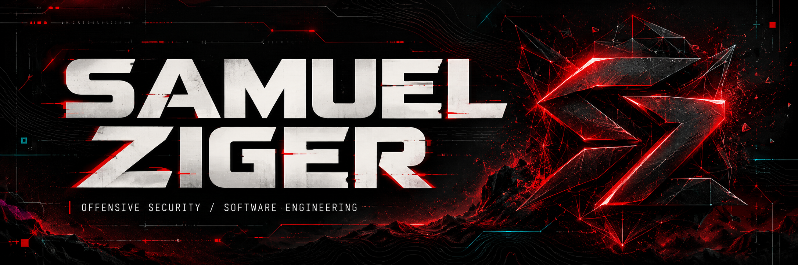

PT-BR / EN


Understand the vulnerability. Demonstrate the impact. Build the fix.
LinkedIn · Email · Certificates
PROFILE / PROJECTS / STACK / EXPERIENCE / CERTIFICATIONS / EDUCATION / KNOWLEDGE / ACTIVITY / CONTACT
01 / whoami
I'm Samuel Ziger, a pentester, security researcher and Full Stack developer.
My work connects offensive security and software engineering. I investigate applications, validate vulnerabilities and build tools that turn scattered information into technical evidence and verifiable fixes.
name: Samuel Ziger
roles: [Pentester, Security Researcher, Full Stack Developer]
focus: [Web Security, Recon, OSINT, Red Team, Automation]
credentials: [CRTA, SYCP]
approach: "Understand the cause. Validate the impact. Support the fix."
02 / projects
GHOSTRECON
RECON OSINT AUTOMATION
A reconnaissance platform for authorized operations. Automates collection, correlates sources and organizes attack surface mapping into technical reports.
SetupRedTeam
ENVIRONMENT SETUP WINDOWS KALI LINUX
Standardized environment setup for pentesting and Red Team work. Automates tool installation and makes the working environment easier to reproduce.
RootID
OSINT AI CORRELATION
Contextual analysis of public data with Serper.dev and Google Gemini. Combines information correlation with reliability and risk indicators.
RedTeam Essentials
PLAYBOOKS CHEATSHEETS METHODOLOGY
An offensive security learning resource with learning paths, playbooks, cheatsheets, MITRE ATT&CK references and report templates.
Cybersecurity Course
SECURITY AWARENESS SOCIAL ENGINEERING ACCOUNT SECURITY
Content on phishing, social engineering, OSINT and best practices for protecting people, accounts and organizations.
03 / toolbox
| Area | Tools and knowledge |
|---|---|
| Languages | Python · Java · JavaScript · TypeScript · Bash |
| Web development | Vue.js · React · HTML · CSS · Bootstrap · Spring Boot · REST APIs |
| Data and backend | Relational databases · Firebase · ORM |
| Web security | Burp Suite · OWASP ZAP · Postman · OWASP Top 10 |
| Networking and exploitation | Nmap · Wireshark · Metasploit · Aircrack-ng |
| Reconnaissance and OSINT | Shodan · Censys · theHarvester · Serper.dev · OSINT frameworks |
| Infrastructure | Linux · Kali Linux · Windows · Docker · Kubernetes · Networking · Hardening |
| Version control | Git · GitHub · GitLab |
| AI and automation | Google Gemini · LLMs · Python automation |
Additional knowledge: C# and Go.
04 / experience
A Divisão
Pentester and Developer · Solutions hub for military personnel2025 — Present
- Web application testing based on the OWASP Top 10, evidence documentation and support for vulnerability mitigation.
- Development of corporate OSINT tools with AI and automation for collection, analysis and technical reporting.
Photo Now
Full Stack Developer · Self-service technology and solutions2025 — Present
- Development and maintenance of web applications, integrating frontend, APIs and backend services.
- Backend development with Java and support for deployment, infrastructure and application security.
Bug Bounty
Independent Researcher · Programs with authorized scope2025 — Present
- Reconnaissance, application analysis and technical validation of vulnerabilities.
- Responsible reporting and ongoing research into web security and bug bounty methodologies.
Brazilian Army
Military service · Infrastructure, networking and technical support2022 — 2026
- Administration, maintenance and hardening of networks and systems.
- Technical incident diagnosis, task coordination and team leadership.
05 / credentials
CRTA · Certified Red Team Analyst
CyberWarFare Labs · Issued in October 2026
Credential: CRTA-6ae4aac2f88c7cc4d4053011
A practical certification in offensive security and Red Team operations, assessing the identification and exploitation of vulnerabilities in controlled environments.
SYCP · Solyd Certified Pentester
Solyd Offensive Security · Issued in June 2026
A practical penetration testing certification covering vulnerability identification and exploitation, privilege escalation, post-exploitation and technical documentation of the results.
Cybersecurity Fundamentals
IBSEC · Brazilian Institute of Cybersecurity
Issued: March 2026 · Valid until: March 2029
Credential: #4d4bb122b0464763
A certification in information security fundamentals, data protection, risk mitigation and cybersecurity best practices.
Cybersecurity Best Practices · Cybersecurity Awareness
IBSEC · Brazilian Institute of Cybersecurity
Issued: March 2026 · Valid until: March 2029
Credential: #69da021d75b0a577
A certification in security awareness, data and system protection, and the application of best practices in digital environments.
Professional program · ISC2 Candidate
ISC2 · March 2026 — March 2027
Participation in ISC2’s candidate program, holding ISC2 Candidate status.
06 / learning
Cisco Networking Academy
| Course or program | Issued |
|---|---|
| Ethical Hacker | Oct/2025 |
| Cyber Threat Management | Sep/2025 |
| Introduction to Cybersecurity | Sep/2025 |
| Networking Academy Learn-A-Thon 2025 | Sep/2025 |
Desec Security
Introduction to Practical Pentesting · September 2025
Credential: OXOZ-DJVVJ-VMAX
Academic education
Systems Analysis and Development · Estácio · 2024 — 2026
Courses by area
Training in offensive security, systems, networking, development and artificial intelligence. Each title opens its certificate; available verification links are included alongside the course.
Pentesting, reconnaissance, Bug Bounty and social engineering
- Docker for Pentesters — Solyd Offensive Security · Mar/2026 · Verify.
- Welcome to the Riachuelo Cybersecurity Experience — DIO / Riachuelo · Mar/2026.
- Practical Pentesting Methodologies — Solyd Offensive Security · Feb/2026 · Verify.
- Linux Post-Exploitation — Solyd Offensive Security · Jan/2026 · Verify.
- Bug Bounty Automation and Strategies — Solyd Offensive Security · Jan/2026 · Verify.
- Mastering Reconnaissance in Pentesting — Solyd Offensive Security · Dec/2025 · Verify.
- Mastering Network Infrastructure Pentesting — Solyd Offensive Security · Dec/2025 · Verify.
- Phishing and Social Engineering Techniques — Solyd Offensive Security · Dec/2025 · Verify.
Web and mobile security
- Artificial Intelligence for Web Pentesting — Solyd Offensive Security · Jan/2026 · Verify.
- Android Malware Development — Solyd Offensive Security · Jan/2026 · Verify.
- Web Application Attacks — Solyd Offensive Security · Jan/2026 · Verify.
- Web Development for Pentesters — Solyd Offensive Security · Dec/2025 · Verify.
Systems, networking and infrastructure
- Windows Post-Exploitation and Active Directory Pentesting — Solyd Offensive Security · Sep/2026 · Verify.
- Wi-Fi Network Security — Solyd Offensive Security · Mar/2026 · Verify.
- Introduction to the Linux Operating System — DIO · Mar/2026.
- Wi-Fi Network Attacks — Solyd Offensive Security · Dec/2025 · Verify.
- Denial of Service (DoS) Attacks and Botnets — Solyd Offensive Security · Dec/2025 · Verify.
- Mastering Linux and Shell Scripting for Pentesters — Solyd Offensive Security · Dec/2025 · Verify.
Security fundamentals
- Hacking for Beginners — Hacking Club · Sep/2026 · Verify.
- PowerShell Fundamentals for Pentesters — Solyd Offensive Security · May/2026 · Verify.
- Privacy and Anonymity Fundamentals — Solyd Offensive Security · Mar/2026 · Verify.
- Cybersecurity Principles — DIO · Mar/2026.
- Networking Fundamentals for Pentesters — Solyd Offensive Security · Dec/2025 · Verify.
- Cryptography and Password Fundamentals — Solyd Offensive Security · Dec/2025 · Verify.
- Information Security and Pentesting Fundamentals — Solyd Offensive Security · Dec/2025 · Verify.
- Introduction to Hacking and Pentesting 2.0 — Solyd Offensive Security · Oct/2025 · Verify.
Programming and automation
- C Fundamentals for Pentesters — Solyd Offensive Security · Jan/2026 · Verify.
- Object-Oriented Python and Automation — Solyd Offensive Security · Dec/2025 · Verify.
- Introduction to Python and Algorithms — Solyd Offensive Security · Dec/2025 · Verify.
Artificial intelligence and prompt engineering
- Prompt Engineering Techniques — DIO · Mar/2026.
- Introduction to Prompt Engineering — DIO · Mar/2026.
- Large Language Model Fundamentals — DIO · Mar/2026.
- The AI Era: Machine Learning, LLMs, Generative AI and Agents — DIO · Mar/2026.
07 / knowledge
Through Zona de Segurança Digital, I create content to help people recognize scams and protect their accounts, data and transactions.
This work covers phishing, social engineering, authentication, Pix, privacy and social media security.
TikTok · @zonadesegurancadigital →
08 / telemetry
Public repositories · Profile activity
Expand public GitHub statistics
The languages shown reflect the code in public repositories and do not, on their own, represent proficiency.
09 / connect
Security, development and research. Let's talk.
Email: samuelziger01@gmail.com
Responsible research. Security work featured in this profile is carried out in labs, on owned assets or on systems with formal authorization and a defined scope.
RECON · RESEARCH · AUTOMATION · ENGINEERING
Built by Samuel Ziger.